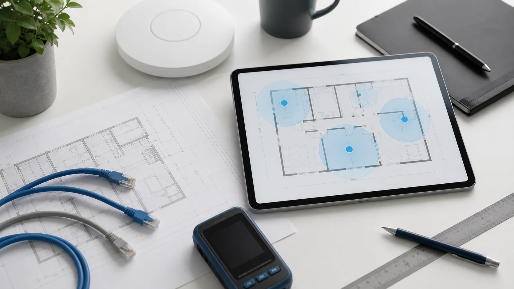
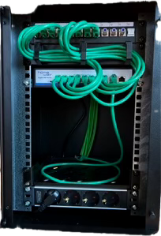
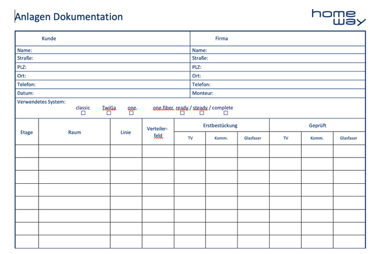
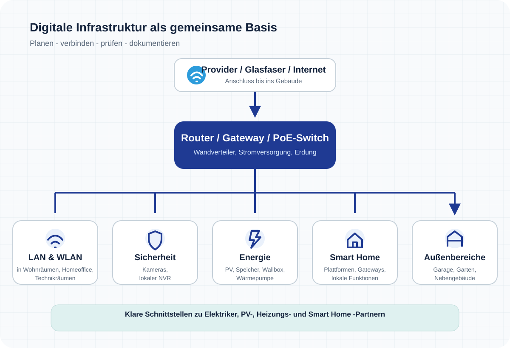

Eckdaten senden
Beschreiben Sie kurz Ihre Anforderungen an das zukünftige Netzwerk und geben Sie an, welcher Internetanschluss und Anbieter derzeit vorhanden sind. Wenn verfügbar, senden Sie uns auch einen Grundrissplan.
Netzwerktechnik & digitale Infrastruktur · Wien · NÖ · Burgenland
Sie bauen ein Haus oder planen eine Sanierung? Dann sollten Sie auch an Ihr Netzwerk denken. Wir planen moderne LAN-, WLAN- und Glasfaserlösungen, abgestimmt auf Ihr Zuhause und Ihre Anforderungen. Von der ersten Beratung über die Planung bis zur technischen Umsetzung und Inbetriebnahme begleiten wir Ihr Projekt – persönlich, durchdacht und zuverlässig.
Damit Ihr neues Zuhause bestens vernetzt ist.
Neubau, Sanierung oder Bestand
Beispielhafte Darstellung unserer Leistungen und Lösungen – teilweise mit KI-generierten Beispielbildern.
Neubau, Sanierung oder Bestand
Ob Neubau, Sanierung oder bestehendes Netzwerk – wählen Sie den passenden Einstieg. Gemeinsam finden wir heraus, welche Lösung für Sie sinnvoll ist.
Planen Sie Ihr Netzwerk rechtzeitig – für zuverlässiges LAN, WLAN und eine passende Infrastruktur in Ihrem neuen oder sanierten Zuhause.
Netzwerk-CheckWir analysieren die bestehende Netzwerkinfrastruktur, prüfen LAN, WLAN und die zentrale Netzwerktechnik und zeigen auf, wie sich Reichweite, Stabilität und Leistung gezielt verbessern lassen.
Ihr BusinessEin stabiles Netzwerk sorgt für reibungslose Arbeitsabläufe. Wir planen und realisieren LAN, WLAN und Gäste-WLAN für Arbeitsplätze, Drucker, IP-Telefonie und Besprechungsräume. Die Netzwerkinfrastruktur wird zentral aufgebaut, dokumentiert und auf zukünftige Erweiterungen vorbereitet.
Ein klarer erster Schritt
Wir sehen uns Ihre Angaben an und geben Ihnen eine erste Einschätzung zu Ihrem Vorhaben. Dabei zeigen wir mögliche Lösungswege auf. Für eine konkrete Detailplanung und ein Angebot ist anschließend ein Vor-Ort-Termin erforderlich.
Beschreiben Sie kurz Ihre Anforderungen an das zukünftige Netzwerk und geben Sie an, welcher Internetanschluss und Anbieter derzeit vorhanden sind. Wenn verfügbar, senden Sie uns auch einen Grundrissplan.
Wir geben Ihnen eine erste Einschätzung zu Ihrem Vorhaben und zeigen mögliche Lösungswege auf. Für die Detailplanung und ein konkretes Angebot ist ein Vor-Ort-Termin erforderlich.
Bei einem bestehenden Netzwerk bildet der Netzwerk-Check die Grundlage für konkrete Empfehlungen zur Optimierung und Erweiterung.
Bei Neubau und Sanierung planen wir nach einem Vor-Ort-Termin die passende CONNECT-Lösung.
Hinweis: Für den Netzwerk-Check und die Detailplanung verrechnen wir jeweils 250 € (Wien/NÖ/Bgld). Bei einer anschließenden Beauftragung ab 2.000 € wird die Detailplanung vollständig angerechnet.
Was Sie bekommen
Homeoffice, Streaming, Gaming, Videoüberwachung, Energie und Smart Home profitieren von einer sauber geplanten Infrastruktur mit zuverlässigem LAN und WLAN. Die Technik bleibt dabei dezent im Hintergrund.

Wo werden Netzwerkanschlüsse benötigt? Wie erreichen wir eine gute WLAN-Abdeckung? Wo soll die zentrale Netzwerktechnik untergebracht werden? Diese Fragen klären wir bereits vor der Umsetzung.

Hier laufen die Netzwerkleitungen zusammen. Wir sorgen für eine übersichtliche Anordnung der Komponenten und eine saubere Zuordnung der Anschlüsse.

Die Anschlüsse und Leitungen werden nachvollziehbar dokumentiert. So behalten Sie den Überblick und spätere Erweiterungen werden einfacher.
Digitale Haustechnik
Immer mehr Geräte und Haustechnik benötigen eine zuverlässige Netzwerkverbindung. Wir planen die passende Infrastruktur und stimmen die erforderlichen Anschlüsse mit den jeweiligen Fachbetrieben ab.

Wir schaffen die passende Netzwerkinfrastruktur für IP-Kameras und deren Aufzeichnung – mit stabilen Netzwerkanschlüssen, PoE und zentraler Netzwerktechnik.
Wir planen die Netzwerkinfrastruktur und stimmen die erforderlichen Netzwerkanschlüsse mit den Fachbetrieben ab.
Wir planen die passende Netzwerkinfrastruktur mit LAN, WLAN und PoE als zuverlässige Grundlage für Smart Home und weitere vernetzte Anwendungen.
Klare Schnittstelle
Eine klare Aufgabenverteilung sorgt für einen reibungslosen Ablauf. Bauherr, Elektriker, Haustechnikpartner und wir stimmen ihre Aufgaben ab und schaffen gemeinsam die Grundlage für eine zuverlässige Netzwerkinfrastruktur.
Unverbindlicher erster Schritt
Ob Neubau, Sanierung oder bestehendes Gebäude: Schicken Sie uns Ihre ersten Informationen. Wir sehen uns Ihr Vorhaben an und besprechen gemeinsam die nächsten sinnvollen Schritte.
Wir freuen uns auf Ihre Anfrage.